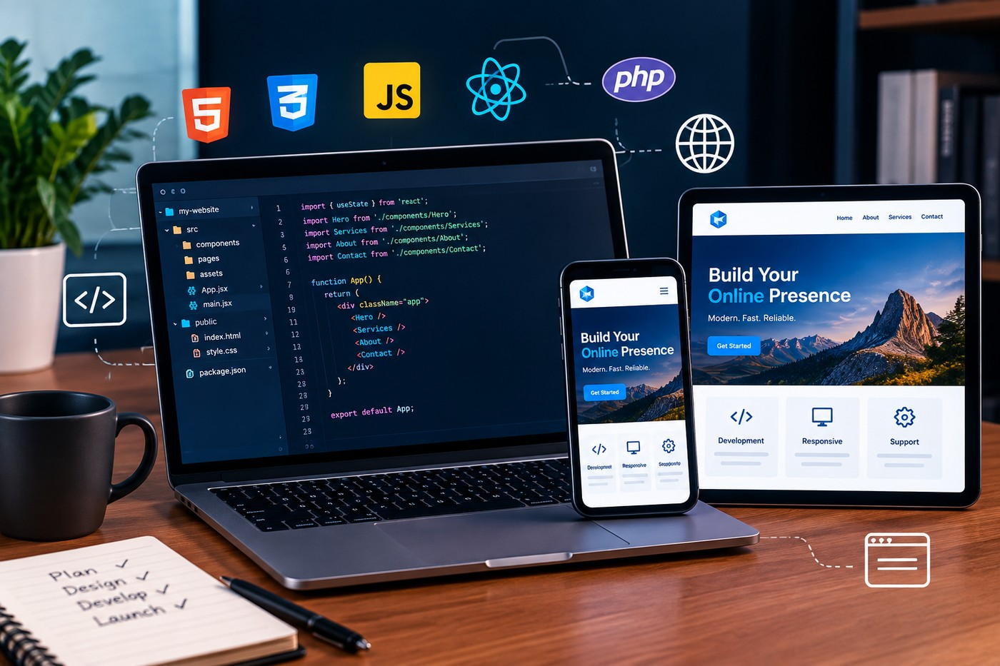
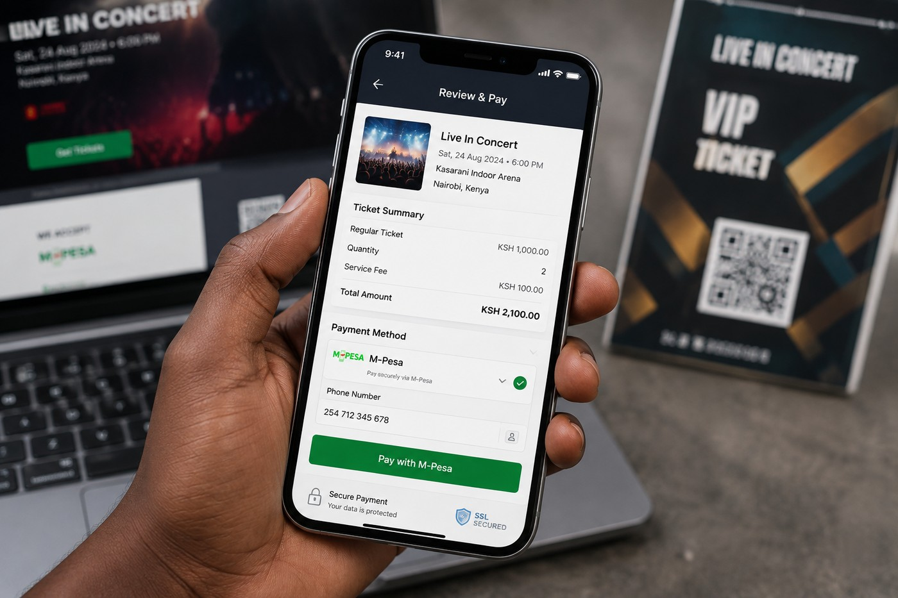
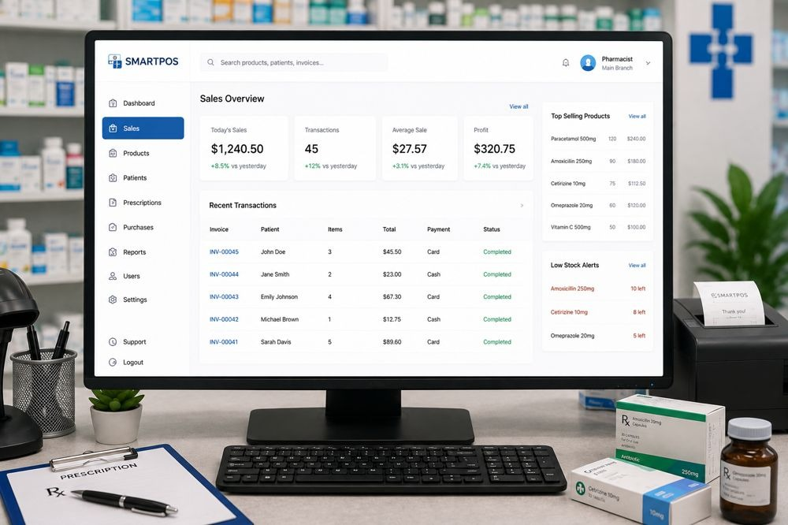

Services
Everything a Kenyan business needs to look professional and sell online.

Website Development
A website that works everywhere is often the first thing a customer sees of your business. We build sites that load fast, look right on a phone as well as a laptop, and lead straight to a call, a WhatsApp message or a sale. For a shop or service business, that usually means fewer missed enquiries and more customers who trust you enough to get in touch before they even call.
Get a quote for Website Development
Graphic Design
Good design is what makes a business look established the moment someone sees it, on a banner, a poster or a social media post. We design the everyday marketing materials that get you noticed at an event, in a shop window or on a customer's phone, so your brand looks consistent and professional everywhere it appears.
Get a quote for Graphic DesignLogo & Branding
Your logo is the mark customers remember you by, on your shopfront, your invoices and your social pages. We design logos and brand identities that are simple enough to recognise at a glance and strong enough to grow with your business, so every part of your brand tells the same story.
Get a quote for Logo & Branding
M-Pesa & WhatsApp Integration
Most of your customers already pay with M-Pesa and message on WhatsApp, so your business should meet them there. We connect M-Pesa payments straight into your website or app, and set up WhatsApp ordering so a customer can pay and reach you in a few taps, no cash handling, no missed messages, and a clear record of every transaction.
Get a quote for M-Pesa & WhatsApp Integration
Business Systems & Apps
Paper records and spreadsheets slow a growing business down and make mistakes easy to miss. We build custom systems, point of sale, inventory, chama and school management, that replace the notebook with a dashboard, so you can see your sales, stock and money at a glance and spend less time on admin.
Get a quote for Business Systems & AppsMore ways we help
SEO
You get a site set up to rank for searches like "your service + Nairobi" or "+ Kisumu".
Maintenance
You get updates, backups and fixes so your site stays online and secure.
Not sure what exactly you need?
Tell me a bit about your business on WhatsApp and I'll help you figure out the right service.
Chat with me on WhatsAppFrequently asked questions
Which service do I need if I'm not sure?
Message us on WhatsApp with a short description of your business, and we'll recommend the right service rather than sell you more than you need.
Can you combine services, like a website and branding, in one project?
Yes, this is common. Many clients start with a logo and brand colours, then build the website around them in the same project.
Do you work with small businesses as well as larger ones?
Yes. Our Starter and Business tiers are built for small shops and service providers, while our Custom tier handles larger systems.
Can I add a service later, after my project is finished?
Yes. Many clients start with a website and add SEO, M-Pesa integration or a system later as their business grows.